Find candidates
BM25 finds lexical matches while dense e5 embeddings retrieve semantic candidates. Hybrid retrieval sends candidates to the ranker.
BM25Dense e5Hybrid fusion
A streaming discovery workbench combining lexical and semantic retrieval, learning to rank, and a contextual-bandit feedback component.
A replay of a real response from the running local API.
Real app screens, from profile selection through discovery and tools.
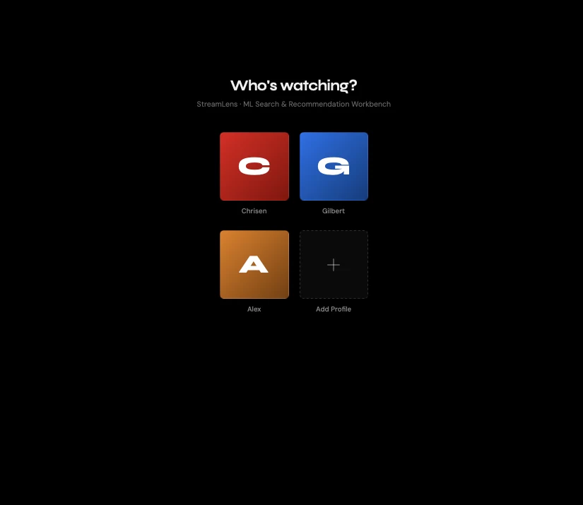
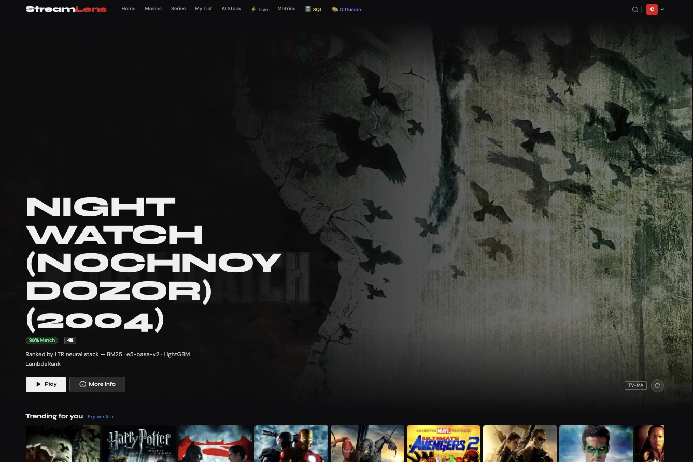
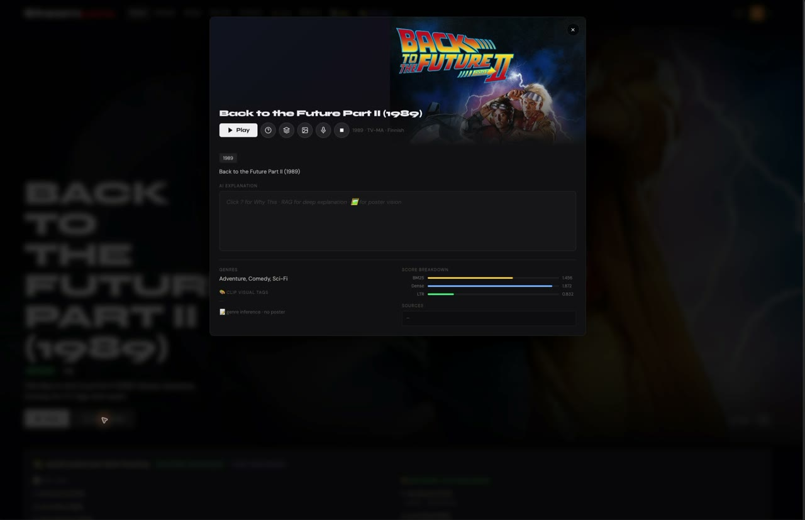
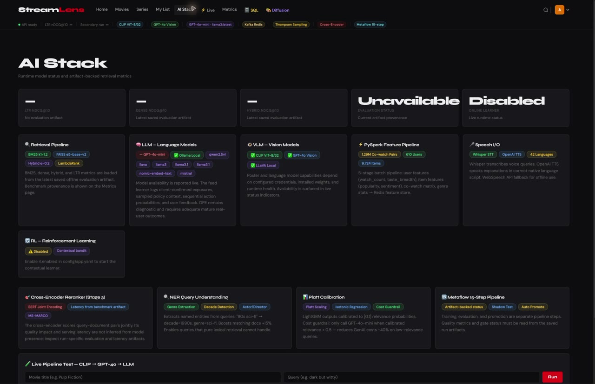
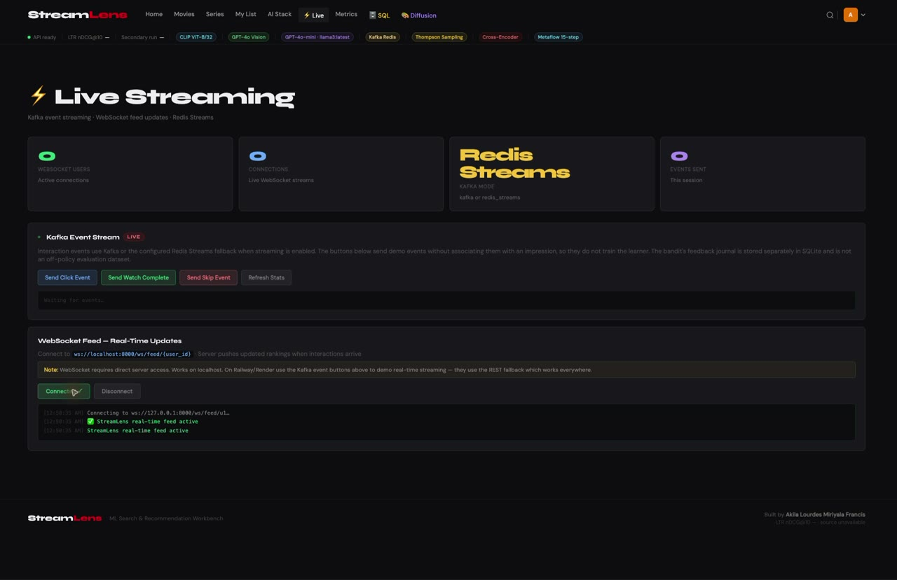
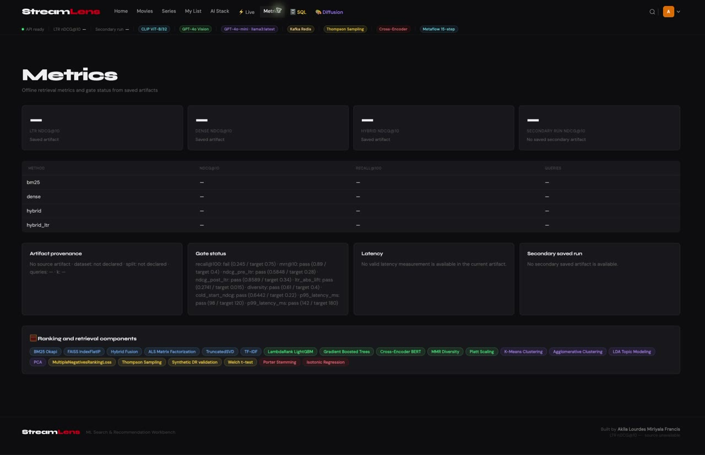
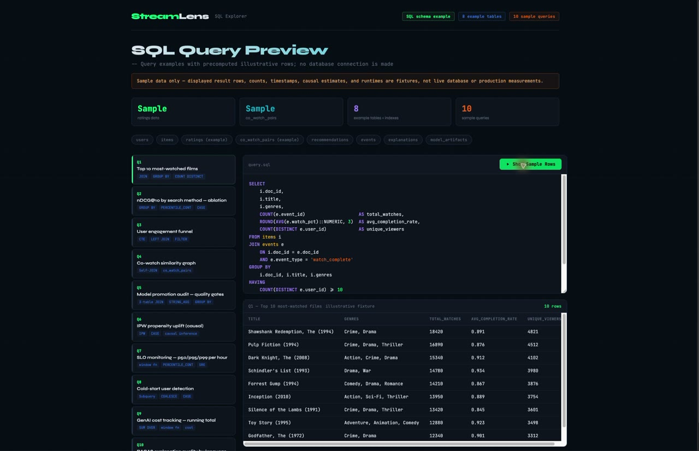
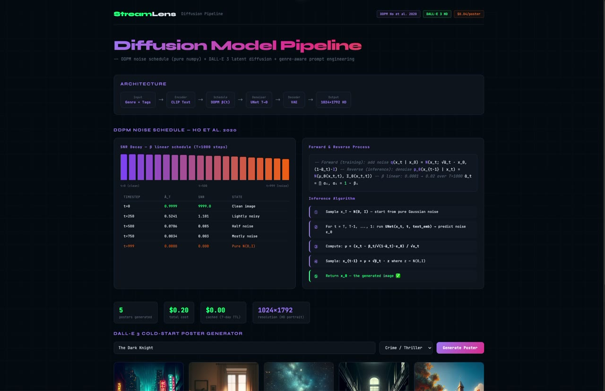
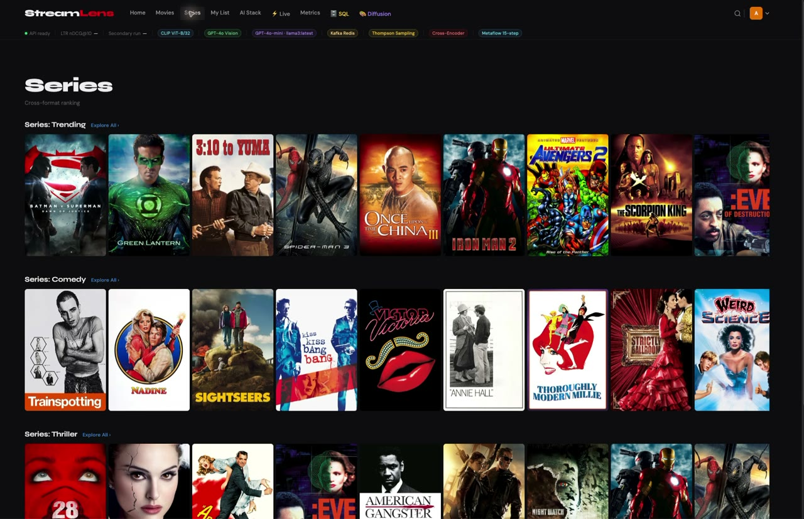
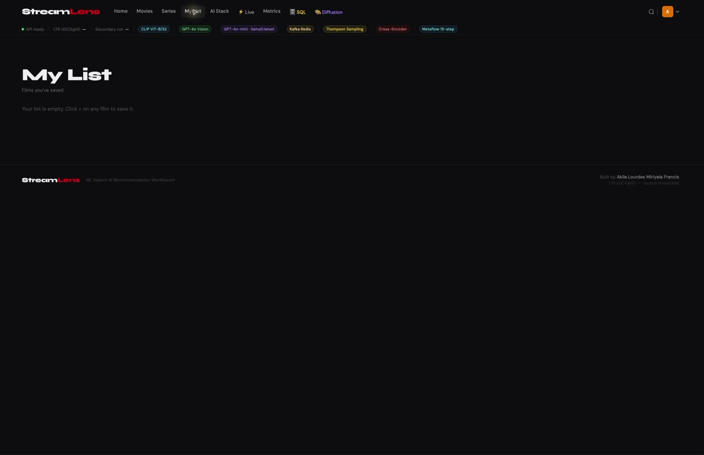
Tap a step to see what runs behind a search.
BM25 finds lexical matches while dense e5 embeddings retrieve semantic candidates. Hybrid retrieval sends candidates to the ranker.
Image outputs committed with the project.
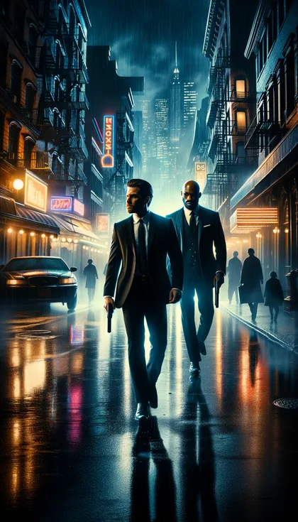
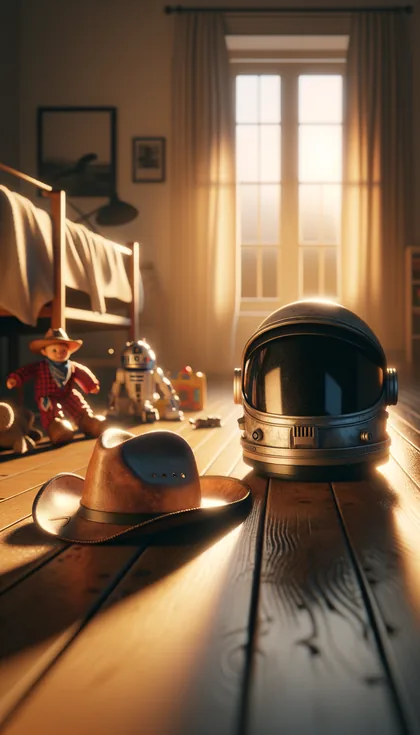
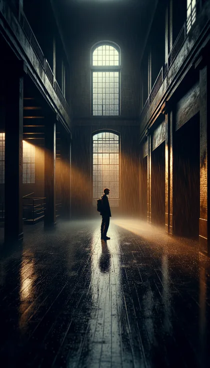